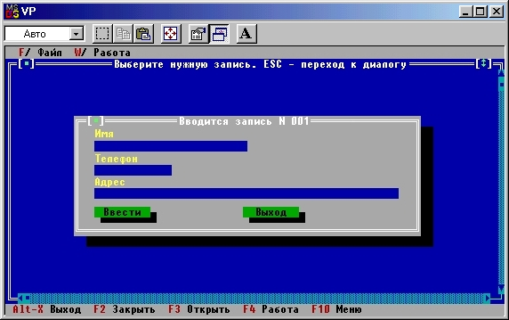

|
|
|
|
Редактирование и добавление записей
Для редактирования и добавления записей создадим окно, показанное на рис. 15.11.
Режим редактирования отличается от режима добавления записей двумя обстоятельствами: во-первых, в режиме редактирования поля ввода данных окна должны содержать текст, взятый из редактируемой записи, а в режиме ввода эти поля пусты. Во-вторых, режим редактирования завершается сразу после нажатия на клавишу Enter, в то время как в режиме ввода нажатие на эту клавишу означает добавление к файлу текущей записи и переход к вводу следующей: режим ввода завершается командой cmClose (клавиша Esc). С учетом этого оба режима реализуются в рамках одной процедуры AddItem (Edit), а параметр Edit указывает нужный режим: если Edit = True, реализуется режим редактирования, если False - режим добавления записей. Вот текст этой процедуры:

Рис.15.11. Окно ввода/редактирования записей
Procedure AddItem(Edit: Boolean);
{Добавляет новый или редактирует старый элемент данных}
const
у = 1;
dy= 2;
L -= LName+LPhone+LAddr;
var
Data: DataType;
R: TRect;
InWin: PDialog;
BName,BPhone,BAddr: PInputLine;
Control: Word;
OldCount: Word;
s: String;
р: PString;
begin
Seek(DataFile,FileSize(DataFile));{Добавляем записи в конец файла}
repeat {Цикл ввода записей}
if Edit then {Готовим заголовок}
s := 'Редактирование:'
else
begin
Str(FileSize(DataFile)+1,s);
while Length(s) < 3 do
s := '0'+s;
s :- 'Вводится запись N '+s
end;
FillChar(Data,SizeOf(Data),' ');{Заполняем поля пробелами}
R.Assign(15,5,65,16) ;
InWin := New(PDialog, Init(R, s));{Создаем окно}
with InWin do
begin{Формируем окно:}
R.Assign(2,y+1,2+LName,y+2);
BName := New(PInputLine, Init(R,LName));
Insert(BName); {Поле имени}
R.Assign(2,y,2+LName,y+1);
Insert(New(PLabel,
Init(R, 'Имя',BName)));
R.Assign(2,y+dy+1,2+LPhone,y+dy+2);
BPhone := New(PInputLine, Init(R,LPhone));
Insert(BPhone); {Поле телефона}
R.Assign (2,y+dy, 2+LPhone,y+dy+1) ;
Insert (New(PLabel,.
Init(R, 'Телефон',BPhone)));
R.Assign(2,y+2*dy+1,2+LAddr,y+2*dy+2);
BAddr := New(PInputLine, Init(R,LAddr));
Insert(BAddr); {Поле адреса}
R.Assign(2,y+2*dy,2+LAddr,y+2*dy+1);
Insert(New(PLabel,
Init(R, 'Адрес',BAddr)));
{Вставляем две командные кнопки:}
R.Assign(2,y+3*dy+1,12,y+3*dy+3);
Insert(New(PButton,
Init(R, 'Ввести',cmOK,bfDefault)));
R.Assign(2+20,y+3*dy+1,12+20,y+3*dy+3);
Insert(New(PButton,
Init(R, 'Выход',cmCancel,bfNormal)));
SelectNext(False) {Активизируем первую кнопку}
end; {Конец формирования окна}
if Edit then with Data do
begin {Готовим начальный текст:}
р :=PS.At(Location); {Читаем данные из записи)
S:=p;
Name := copy(s,1,LName);
Phone:= copy(s,succ(LName),LPhone);
Addr := copy(s,succ(LName+LPhone),LAddr);
InWin.SetData(Data) {Вставляем текст в поля ввода}
end;
Control := DeskTop.ExecView(InWin); {Выполняем диалог}
if Control=cmOk then with Data do
begin
if Edit then
DeleteItem; {Удаляем старую запись}
Name := BName.Data;
Phone:= BPhone.Data;
Addr := BAddr.Data;
s[0] := chr(L) ;
FillChar(s[1],L,' ');
move(Name[1],s[1],Length(Name)) ;
move(Phone[1],s[succ(LName)],Length(Phone));
move(Addr[1],s[succ(LName+LPhone)],Length(Addr));
OldCount := PS.Count; {Прежнее количество записей}
РS.insert(NewStr(s)); {Добавляемв коллекцию}
{Проверяем добавление}
if OldCount <> РS.Count then
Write(DataFile,Data) {Да - добавляем в файл}
end
until Edit or (Control=cmCancel);
Draw
end; {AddItem}
Вначале указатель файла смещается в самый конец, подготавливая добавление записей (судя по всему, режим добавления будет использоваться гораздо чаще, чем режим редактирования). Затем формируется заголовок окна и само окно. Операторы
if Edit then with Data do
begin {Готовим начальный текст:}
.......
end;
готовят начальное состояние полей ввода в режиме редактирования. Оператор
InWin. SetData (Data)
помещает подготовленный текст в нужные поля. При обращении к процедуре SetData данные должны быть предварительно подготовлены в строгом соответствии с порядком создания диалоговых полей в окне и типом их данных. Поскольку в нашем случае формат данных в полях ввода окна совпадает с форматом файловых данных, мы можем использовать одну и ту же переменную как для работы с файлом, так и для установки начальных значений диалоговых полей.
В самом общем случае пользователь должен объявить новый тип, соответствующий формату помещаемых в окно данных, и использовать выражение этого типа в качестве параметра обращения к процедуре SetData. Например, если бы в нашем окне было предусмотрено только одно поле ввода «Телефон», то установку данных можно было бы осуществить таким оператором:
InWin. SetData (DataType . Phone)
где DataType.Phone - выражение типа String [LPhone].
Контроль за соответствием типа устанавливаемых данных порядку объявления и типу данных диалоговых полей полностью возлагается на программиста. В операторах
if Control=cmOk then with Data do
begin
.....
end
данные, полученные из диалогового окна, помещаются сначала в отсортированную коллекцию, а затем - в файл. С помощью оператора
if OldCount <>PS. Count then
проверяется изменение количества данных в коллекции (напомню, что в отсортированную коллекцию можно поместить только уникальную запись). Если количество записей в коллекции изменилось, значит новая запись не совпадает ни с одной из уже имеющихся и ее следует поместить в файл.
Операторы
if Edit then
DeleteItem; {Удаляем старую запись}
предварительно удаляют старую запись с помощью обращения к процедуре DeleteItem.
|
|
|
|